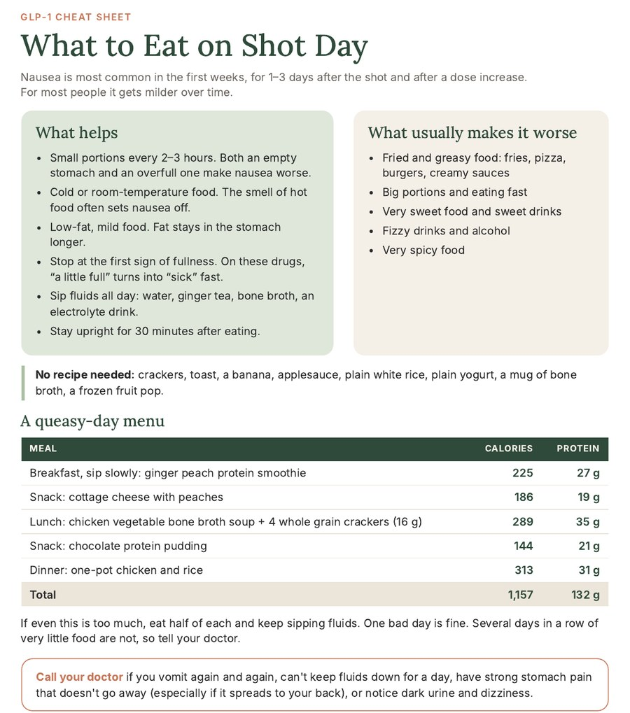
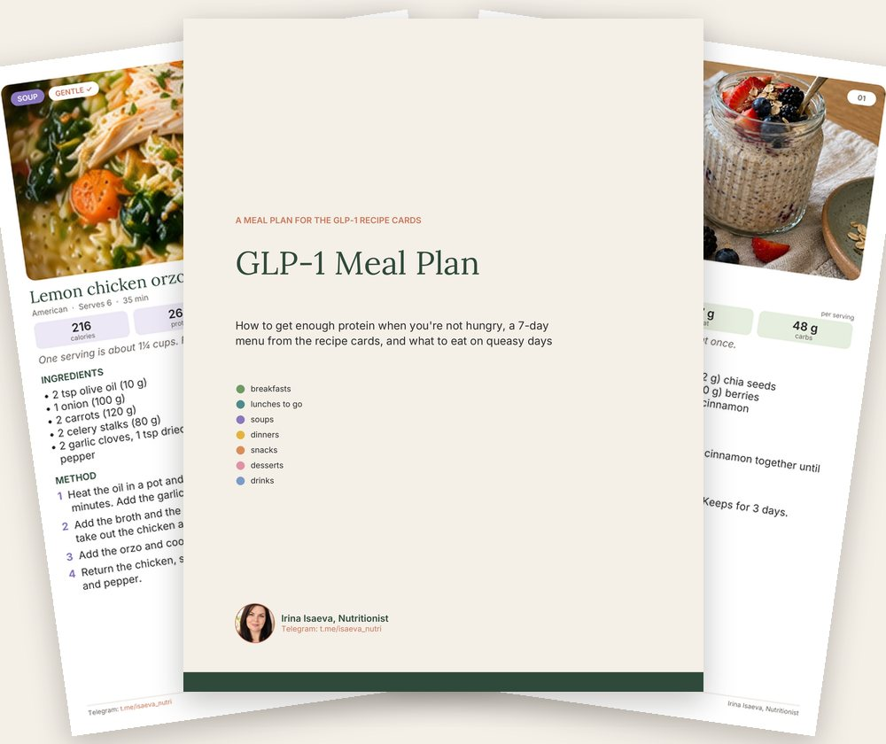

Free printable
What to Eat on Shot Day
Small, cold, low-fat meals every 2–3 hours and fluids all day. Below: what helps, what makes nausea worse, and a one-day menu with 132 g protein.

Download the printable page (PDF)Nausea is most common in the first weeks, for 1–3 days after the shot and after a dose increase. For most people it gets milder over time.
What helps
- Small portions every 2–3 hours. Both an empty stomach and an overfull one make nausea worse.
- Cold or room-temperature food. The smell of hot food often sets nausea off.
- Low-fat, mild food. Fat stays in the stomach longer.
- Stop at the first sign of fullness. On these drugs, “a little full” turns into “sick” fast.
- Sip fluids all day: water, ginger tea, bone broth, an electrolyte drink.
- Stay upright for 30 minutes after eating. Lying down right after a meal makes nausea and heartburn worse.
What usually makes it worse
- Fried and greasy food: fries, pizza, burgers, creamy sauces
- Big portions and eating fast
- Very sweet food and sweet drinks
- Fizzy drinks and alcohol
- Very spicy food
Foods that need no recipe
A queasy-day menu
| Meal | Protein | Calories |
|---|---|---|
| Breakfast, sip slowly: ginger peach protein smoothie | 27 g | 225 |
| Snack: cottage cheese with peaches | 19 g | 186 |
| Lunch: chicken vegetable bone broth soup + 4 whole grain crackers (16 g) | 35 g | 289 |
| Snack: chocolate protein pudding | 21 g | 144 |
| Dinner: one-pot chicken and rice | 31 g | 313 |
| Total for the day | 132 g | 1,157 |
If even this is too much, eat half of each and keep sipping fluids. One bad day is fine. Several days in a row of very little food are not, so tell your doctor.
Call your doctor if you vomit again and again, can't keep fluids down for a day, have strong stomach pain that doesn't go away (especially if it spreads to your back), or notice dark urine and dizziness.
A gentle breakfast to try first
See the overnight oats recipeAll five recipes from this menu are in the set
GLP-1 Recipe Cards and Meal Plan

On semaglutide or tirzepatide you eat much less, and the hard part is getting enough protein so you lose fat and keep your muscle. I sized these recipes for a small appetite: most meals are 200–350 calories with 20–40 g of protein.
- 40 printable recipe cards with a photo, calories and macros on each
- 12 cards marked GENTLE for shot day and queasy days
- A 7-day menu with a prep plan and a grocery list
- What to eat when you have no appetite or feel sick
- 4 PDF files, US Letter and A4. Nothing is shipped.
$11.99 printable PDF
Get the cards and meal planCheckout is on Lava.top. You download the files right after payment.
About the author
I'm Irina Isaeva, a nutritionist. I hold a professional diploma in nutrition and psychological counseling from Union University in Moscow: a 1,500-hour program completed in 2026, with the qualification of nutritionist. My coursework covered dietetics, the causes of excess weight and the psychology of eating behavior.
This is general information for adults and doesn't replace advice from your doctor. Do not adjust doses on your own.